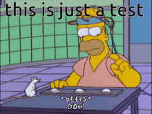

Beyond binary pass/fail: a passing test might hide non-standard logic, while a failing test might just be a formatting change (bullet list vs paragraphs).
Re-recording golden baselines: keep test datasets updated whenever agent instructions or system workflows evolve.
num_runs > 1 only when measuring non-deterministic variance for statistical confidence.